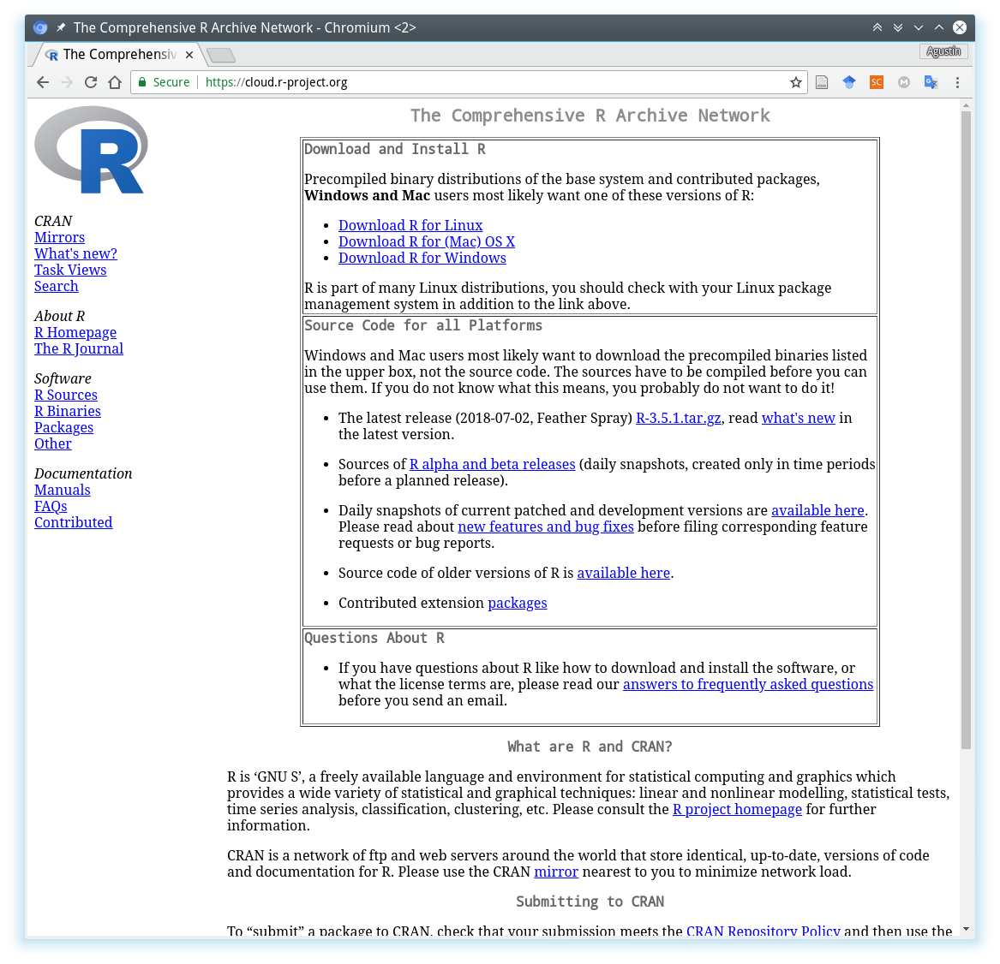

2.1 ¿Cómo instalar R y RStudio?
RStudio requiere que el sistema tenga al menos una versión de R instalada. Ambos softwares son multiplataforma y pueden ser ejecutados en sistemas operativos Windows, OS X y Linux. A continuación se describe el procedimiento para instalar R y RStudio bajo Windows.
2.1.1 Instalación de R
- Descargar el archivo instalador correspondiente a la última versión estable de R desde el CRAN4 CRAN se compone de un conjunto de servidores espejo distribuidos alrededor del mundo que tienen copias de R y sus paquetes. No es necesario escojer el espejo más cercano ya que el espejo nube (https://cloud.r-project.org) automáticamente determina de que servidor conviene realizar la descarga. (del inglés, Comprenhensive R Archive Network) visitando el siguiente link.5 Al momento de escribir estas instrucciones la última versión estable de R era la 3.5.1 “Feather Spray”, por lo tanto el link apuntará al archivo
R-3.5.1-win.exe.
Figure 2.5: Página de descaga de R
Una vez finalizada la descarga ejecutar el archivo
.exey seguir el asistente de instalación con todas las opciones por defecto.Si la instalación ha sido exitosa el el menú Inicio > Todos los Programas > R se encontrarán dos accesos directos
R i386 3.5.1yR x64 3.5.1los cuales permiten correre la interfase de usuario mínima que viene con la versión de R para Windows.
Figure 2.6: R GUI para Windows

2.1.2 Instalación de RStudio
- Ir al sitio web de descarga de RStudio: https://www.rstudio.com/products/rstudio/download/
Figure 2.7: Página principal de RStudio

- Descargar el archivo de instalación correspondiente a nuestra plataforma o sistema operativo. Por ejemplo: para Windows iniciará la descarga del archivo
RStudio-1.1.453.exe
Figure 2.8: Página principal de RStudio

- Una vez finalizada la descarga ejecutar el archivo
.exe6 Al momento de escribir estas instrucciones la última versión estable de R Studio era la 1.1.453 por lo tanto el link apuntará al archivoRStudio-1.1.453.exe.RStudio-1.1.453.exey seguir el asistente de instalación con todas las opciones por defecto.
Si la instalación ha sido exitosa el el menú Inicio > Todos los Programas > R Studio se encontrará el acceso directo a R Studio el cual, mediante el menu contextual (botón derecho del ratón) puede enviarse al Escritorio como acceso directo o bien anclar al menu de Inicio o barra de acceso rápido.
Ahora sí, ya tenemos listo R y RStudio para empezar a trabajar!!